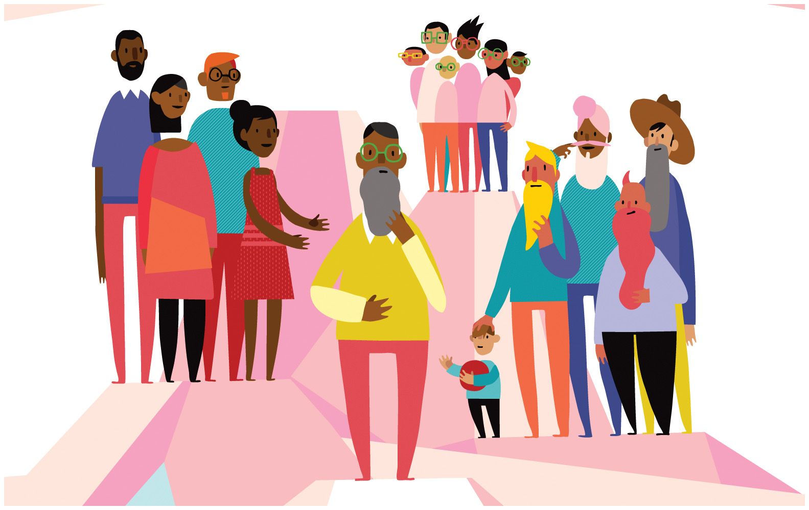

Families on Television¶

Many significant shifts have occurred over the last fifty years in how we think of the family and the experience of living in a household. These include changes in marital and living patterns, marriage and divorce rates, the gendered nature of housework, and labor force participation. There are many theories to explain the factors. In this application, you will focus on the potential role of culture in creating new norms about the family. Alternatively, culture may merely reflect other shifts in society. Is television responsible for the deinstitutionalization of the family? In this application, you will classify tv shows from four different decades to examine which changed first: changes in depictions of families on television or changes in families in society.
Video Overview¶
Here’s my overview of the assignment, complete with an example of what it should look like.
Description¶
You will explore two hypotheses on the relationship between popular culture and the deinstitutionalization of the family. The first is provided below.
Hypothesis 1: TV shows began increasingly focusing on non-nuclear families prior to shifts in the larger society. In other words, the earlier time period is more likely to depict families consisting of a married couple and their children (by birth or adoption) than the later time period.
Hypothesis 2 : Develop a second hypothesis. This hypothesis could be related to any other aspect of American family life and how it is reflected on television. For example, your hypothesis could be on depictions of divorce, interracial marriages, non-married couples, or employed mothers.
Our cultural data comes from TV shows. Randomly sample one year from every other decade (i.e., the 1950s, 1970s, 1990s, 2010s).
Find a listing of the 20 most popular TV shows those years.
1950s- 1990s: Classic TV Hits
2000s on: Wikipedia (for example, Top-rated United States television programs of 2006–07)
Calculate the percentage of shows for a year that were “household” centered (e.g. “Friends” or “The Simpsons”) as opposed to focused on the workplace (e.g. “The Office” or “CSI”) or something else. Overall, would you say that television has become more or less household focused? If so, when did the shift happen?
Focus now only on the household shows. Come up with a coding scheme that will allow you to test your hypotheses. For example, you might want to look for presence or absence of marriage; whether or not a central character is divorced or widowed; whether adult children live in the home; or whether the couple is interracial.
Record data for all your TV shows! You do not need to watch them. Wikipedia and other internet sources are your friends.
Aggregate your results. Does the evidence support either of the hypotheses?
Write a brief research report that discusses your research and what you found. The report should include:
an introduction;
a discussion of your hypotheses;
a description of your data and methods of analysis;
a description of what you found with respect to a shift in becoming more or less household focused and your two hypotheses. Include a table with your write up of your findings.
An evaluation of what you learned about the media you studied. Did the findings surprise you?
Requirements¶
No late assignments will be accepted.
Your research report should be at least 250 words long.
Grading¶
Grading is High Pass (100); Pass (87) and Fail (0). Students who do not satisfactorily complete the exercise (i.e, Fail) will be allowed to revise and resubmit their application for a Pass within one week.
To be eligible for a High Pass, you must go substantially beyond the assignment requirements both in terms of research and analysis. To qualify for a High Pass, you must include a section at the front of your paper called High Pass with at least 50 words detailing how you exceeded the requirements.